DOCUMENTAZIONE
Abstract
BTS UNIVERSE ha come obiettivo quello di fornire informazioni a proposito della boy band sudcoreana più popolare del momento, i BTS. A differenze delle numerose risorse che già esistono, questo sito intende provvedere solo le informazioni fondamentali, evitando che chi legge si senta sopraffatto dalla quantità di contenuti esistenti. Il sito si rivolge a tutti coloro che vorrebbero conoscere meglio il gruppo e ai fan che vogliono rimanere aggiornati. Un altro elemento che il sito offre è la possibilità di trovare link utili per chiunque voglia approfondire le proprie conoscenze su tutto ciò che riguarda i BTS.
Project Management Plan
1. Benchmarking
- Obiettivi: l'obiettivo principale del sito è fungere da guida per tutti coloro che vorrebbero conoscere meglio i BTS e, allo stesso tempo, aiutare i fan (ARMY) a orientarsi fra i numerosi contenuti che la band offre.
- Target Utente: Persone di qualsiasi età, genere e nazionalità che apprezzano la musica dei BTS e vorrebbero avere più informazioni su tutto ciò che li riguarda.
- Competitors:
The BTS Guide → elenco di risorse riguardanti la band, rivolto ai fan ("nuovi" e non). Pregi: contiene numerose informazioni, facili da trovare per coloro che già conoscono abbastanza bene la band e cercano qualcosa in particolare. Difetti: il sito potrebbe risultare dispersivo per coloro che non conoscono la band e stanno cercando informazioni generali.
All For ARMY → il sito raccoglie informazioni utili per rimanere aggiornati sulle attività del fandom, quindi è rivolto principalmente ai fan. Pregi: è molto utile per chi ha già familiarità con il gruppo e il fandom. Difetti: contiene poche informazioni utili per coloro che vogliono conoscere meglio la band e non è aggiornato riguardo alle nuove uscite musicali.
2. Struttura e Layout
- Architettura del sito:
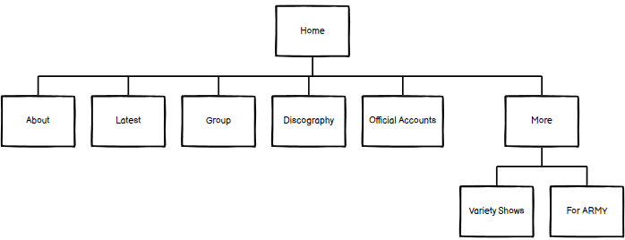Immagine 1. Rappresentazione grafica (ad albero) dell'organizzazione delle pagine del sito
- Wireframe:
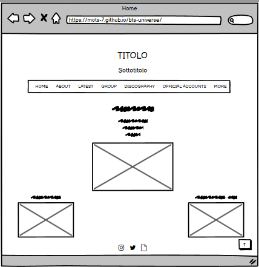Immagine 2. Wireframe della Home
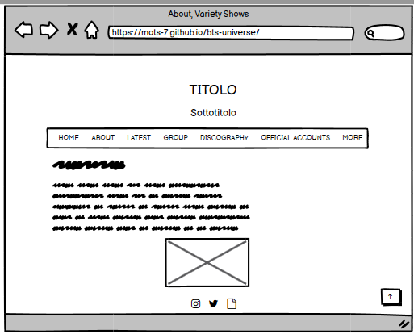Immagine 3. Wireframe delle pagine About e Variety Shows
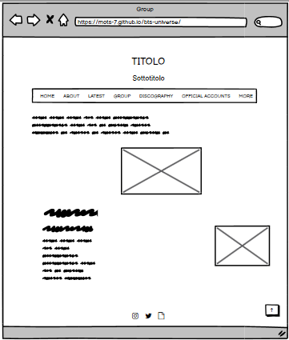Immagine 4. Wireframe della pagina Group
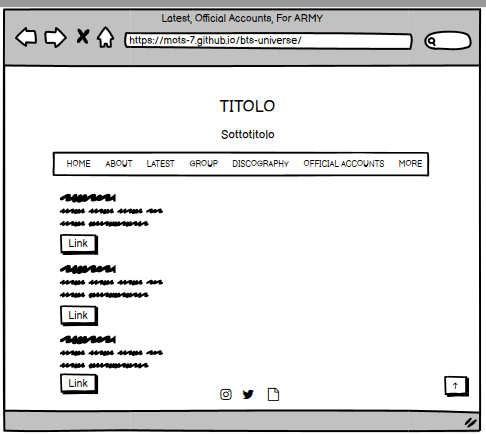Immagine 5. Wireframe delle pagine Latest, Official Accounts e For ARMY
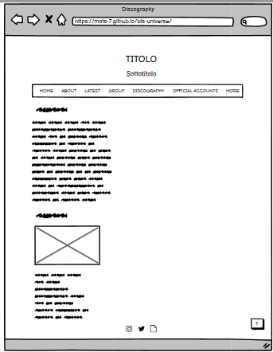Immagine 6. Wireframe della pagina Discography
- Look and Feel:
Font → Epilogue (sans-serif) per aumentare la visibilità dei titoli e facilitare la lettura dei testi, essendo questi ultimi molto brevi
Palette colori → bianco, nero (per rendere facilmente leggibili i testi) e #6f42c1 (perché il viola è considerato uno dei simboli della band)
Favicon → raffigura una balena, anch'essa simbolo del gruppo
3. Linguaggi e Strumenti
- Linguaggi: HTML, CSS, JavaScript
- Strumenti:
Sublime Text 2 → text editor
Google Fonts e Fontpair → per la scelta delle font
Adobe Color → per la scelta dei colori
Canva e Paint 3D → per la realizzazione della favicon
Font Awesome → per le icone
W3Schools → per JavaScript e tutorial su HTML/CSS
Balsamiq → per l'architettura e i wireframe
GitHub → per la pubblicazione del sito
Social → per la promozione del sito
Communication Strategy
1. Background
A differenza dei competitors analizzati precedentemente, BTS UNIVERSE è un sito rivolto principalmente alle persone che non hanno familiarità con i BTS e il loro fandom. Questo sito contiene solo le informazioni di base, scritte in modo schematico e facili da capire, quindi più adatte a tutti coloro che sono "inesperti" riguardo all'argomento.
2. Obiettivi Comunicativi
L'obiettivo principale di questo sito è quello di diffondere le informazioni fondamentali riguardanti i BTS, quindi fungere da guida per i "nuovi" fan o per chiunque voglia sapere qualcosa di più sulla band. Inoltre, BTS UNIVERSE ha lo scopo di tenere aggiornati i fan su tutte le novità e fornire un elenco di contenuti che possono essere utili ad approfondire il tema.
3. Target Audience e Messaggio
- A chi si rivolge il sito?
Persone di qualsiasi genere e nazionalità, con un'età compresa principalmente tra i 18 e i 29 anni, a cui piace ascoltare la musica dei BTS e vogliono conoscere meglio il gruppo
Fan del gruppo
Utente casuale, che ha solo senito parlare dei BTS e vorrebbe saperne di più
(I target audience devono sapere l'inglese)
Questi gruppi vengono solitamente raggiunti attraverso i social, quindi la realizzazione di post su Instagram o Twitter è il modo più efficace per far conoscere loro il sito.
- Quale messaggio trasmette il sito?
Il sito si propone di fornire informazioni basilari a proposito della band. Tutti i contenuti sono scritti in modo schematico e sintetico per facilitarne la compresnione da parte del target audience. Uno altro scopo del sito è fare in modo che le persone si appassionino al gruppo e continuino (o comincino) ad apprezzare la loro musica.
4. Promozione
Intendo promuovere il sito attraverso la pubblicazione di post su Instagram, Twitter e Weverse (social network creato dalla società di intrattenimento sudcoreana Hybe Corporation).
5. Valutazione dei Risultati
All'inizio del progetto avevo stabilito che gli obiettivi comunicativi da raggiungere dovevano essere i seguenti:
- Almeno 20 like a un post su Instagram (link al post)
- Almeno 20 like e 10 retweet a un post su Twitter (link al tweet)
- Almeno 20 "cheer" a un post su Weverse
Tutti questi obiettivi sono stati raggiunti con successo, inoltre ho ricevuto commenti che mi hanno confermato che il sito è effettivamente utile ed efficace.
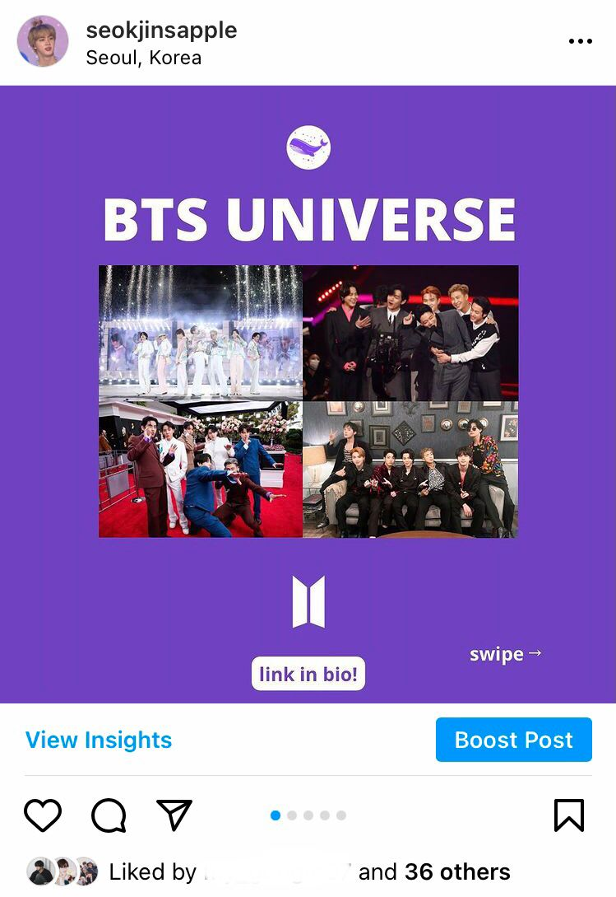Immagine 7. Post su Instagram
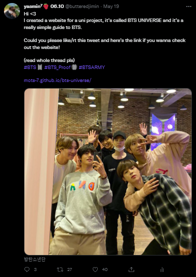Immagine 8. Post su Twitter
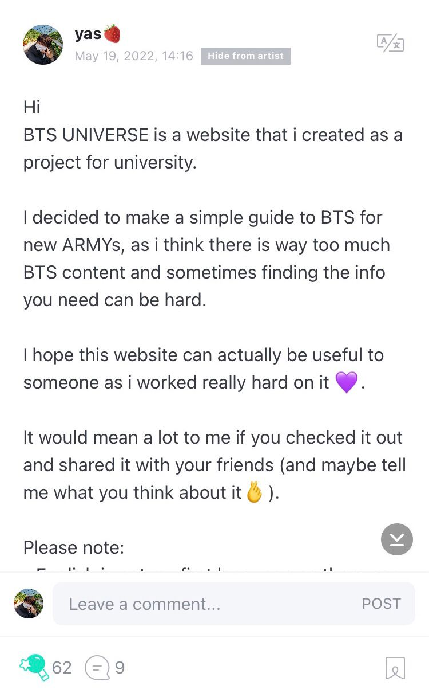Immagine 9. Post su Weverse
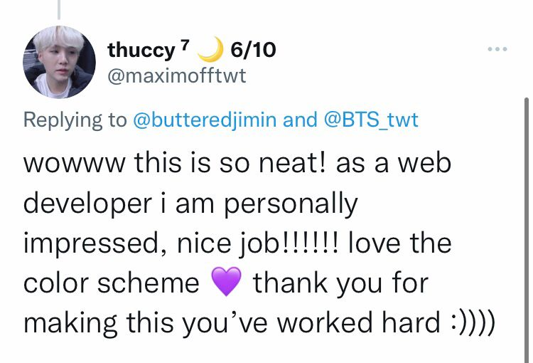Immagine 10. Commento al tweet
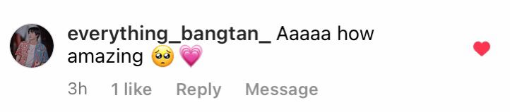Immagine 11. Commento al post di Instagram
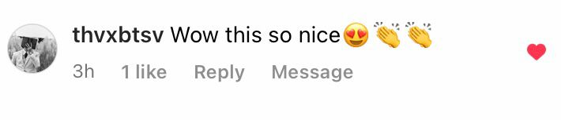Immagine 12. Commento al post di Instagram
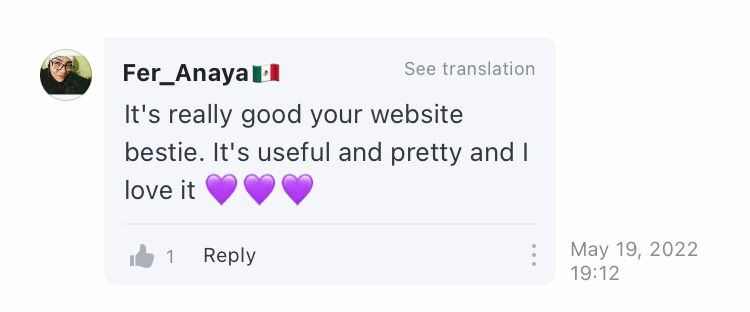Immagine 13. Commento al post di Weverse